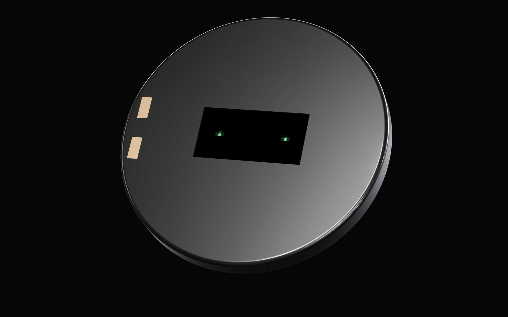
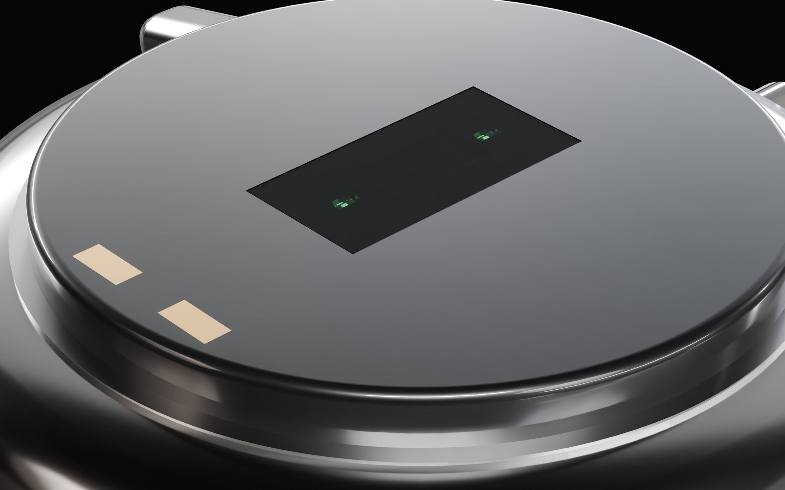
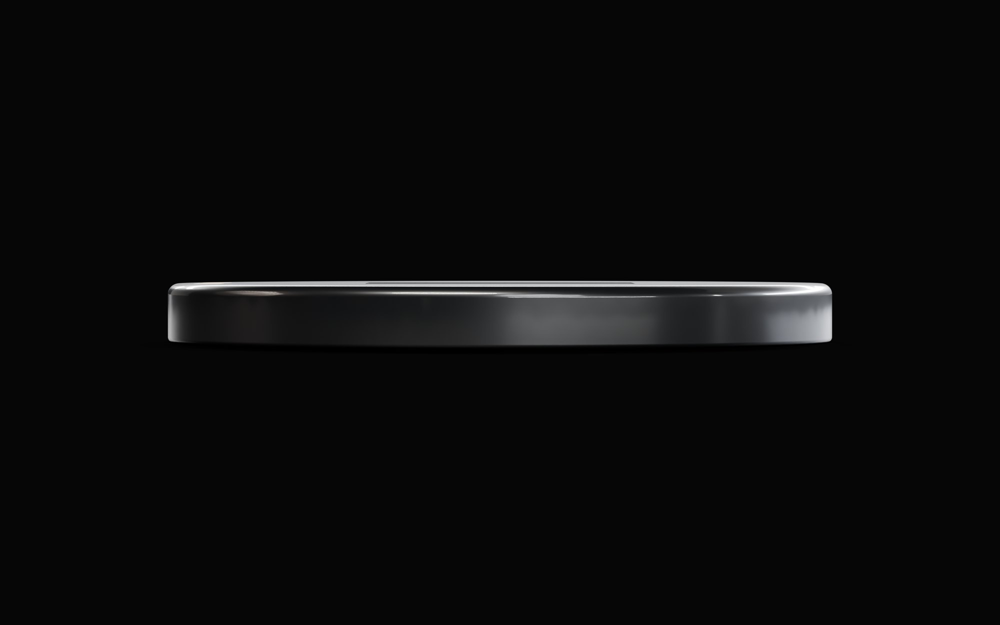
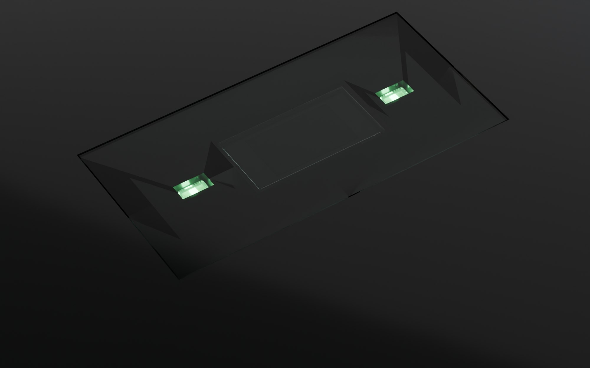
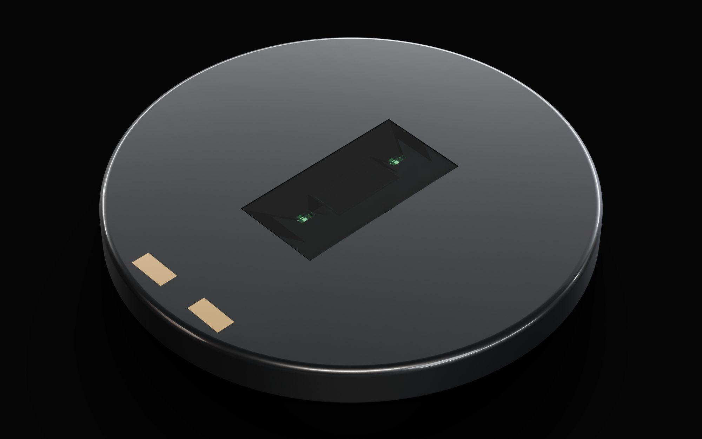
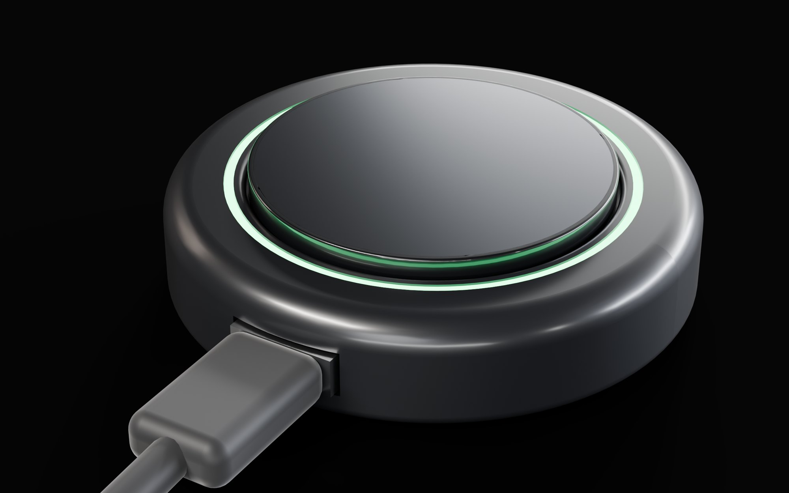
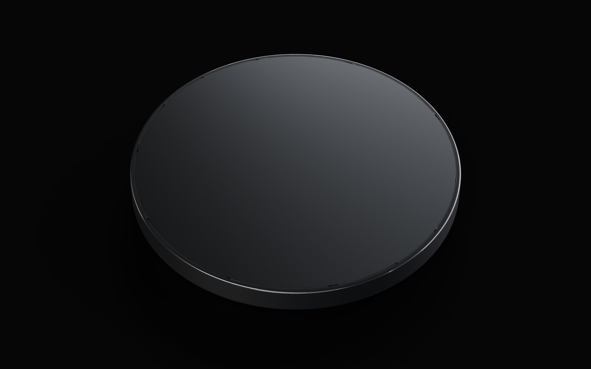

Keep your watch.
Lose the band.
Pulse Pod is a thin, sealed disc that sits under the watch you already wear. It tracks your heart rate, movement and skin temperature, so the fitness band on your other wrist can go back in the drawer.
Why Pulse Pod
One wrist. Not two.
You wear a watch you're proud of. You also want to know how your heart is doing and how hard you're training. Until now that meant a rubber fitness band on your other wrist.
- A fine watch on one wrist, a fitness band on the other
- A rubber strap that clashes with a suit
- Everyone can see you're wearing a tracker
- Just your watch, on one wrist
- Nothing extra to see, at dinner or in the boardroom
- Heart rate and activity, tracked out of sight

Hidden
It lives on the back
of your watch.
Pulse Pod sits between your watch and your wrist, where nobody looks. From the front, your watch looks exactly the way it always has.

Thin
You won't feel it.
At 2.67 mm, three credit cards stacked, Pulse Pod adds almost nothing to your watch. The skin side is smooth, rounded ceramic, so it's comfortable all day.
Inside
A whole fitness tracker,
in a coin.
A heart sensor, a motion sensor, a thermometer, a battery and a Bluetooth radio, all sealed into one thin disc. Keep scrolling and watch it come together.
- Smooth ceramic shell, against your skin
- Heart-rate sensor
- Brains and Bluetooth radio
- Rechargeable battery
- Sealed back, against your watch

Heart rate
A little green light.
Every heartbeat.
Pulse Pod shines a soft green light into your skin. With every heartbeat a little more blood passes under it, and a little less light bounces back. Pulse Pod counts those tiny changes. It's the same method the big fitness bands use.
Good morning, Erik
Well rested. A good day to train hard.
The app
It measures
everything.
Heart rate, heart-rate variability, sleep, recovery, strain, breathing, skin temperature and steps, around the clock. Each morning you get one simple score and a plain-English tip for the day.
It also learns what normal looks like for you. When your resting heart rate creeps up and your temperature rises, Pulse Pod warns you that you're coming down with something, often before you feel it.
Switching from Whoop, Oura, Garmin, Fitbit or Apple Health? Import your data and carry on right where you left off. Your trends, your baselines, years of sleep, all there from day one.

Sealed
No ports. No buttons.
Nothing to break.
Pulse Pod is sealed shut at the factory. There's nothing to open, press or plug in. All you'll see is a small window for the light and two gold dots it charges through.

Charging
Drop it in.
It clicks into place.
Take Pulse Pod off your watch and drop it on its dock. Magnets pull it into place, and it only fits one way, so you can't get it wrong. Fifteen minutes gets you from empty to 80%, so a shower is all it takes.
Software updates arrive by themselves, over Bluetooth.
At a glance
Everything you need to know.
Per charge, with heart rate on all day.
On the magnetic dock.
All day, from the green light sensor.
Recovery, strain, breathing, skin temperature and steps.
The size of a large coin.
Import your history from Whoop, Oura, Garmin and more.
No screen, no buttons, nothing to fiddle with.
New features arrive wirelessly.
Questions
Fair questions.
Will it fit my watch?
Pulse Pod is 30 mm across, which suits most men's watches. How it attaches to the back of your watch is still being designed. The goal is no tools and no marks on your watch.
Does it change or damage my watch?
No. Nothing is opened, drilled or glued. Your watch works exactly as before, and you can take Pulse Pod off any time.
Do I have to charge my watch now?
No. Your watch stays exactly as it is. Only Pulse Pod needs charging, and 15 minutes on its dock gets it to 80%.
I already use Whoop or Oura. Do I lose my history?
No. Import your data from Whoop, Oura, Garmin, Fitbit or Apple Health and Pulse Pod picks up right where you left off.
Can I see my numbers?
Yes, in the Pulse Pod app on your phone: recovery, sleep, heart rate, strain and early warnings when you might be getting sick.
When can I buy one?
Not yet. The design is done and prototypes are incoming. Join the list and you'll hear first.
Built in the open
Where it is today.
- DoneParts chosen
Battery, sensors and radio picked and checked.
- DoneCircuit board designed
The tiny board inside Pulse Pod is fully drawn and checked.
- DoneCase and charger designed
Sealed case, gold charging dots and the magnetic dock all fit together.
- NextFirst prototypes
Build the first units and test heart rate, battery life and water sealing.
- LaterWatch fitting and phone app
The clip for your watch and the app for your phone.

Be the first to know.
An occasional email when Pulse Pod takes a step forward. No spam, ever.